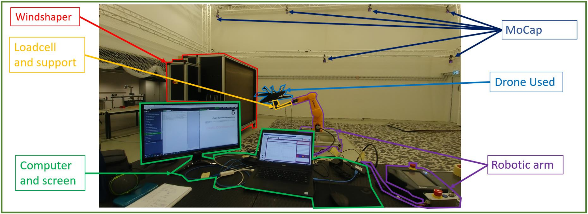
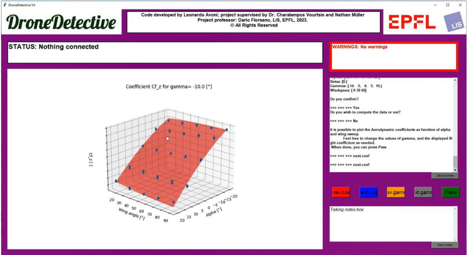

DroneDetective
Python tool for automated wind tunnel testing and aerodynamic analysis of morphing drones.
DroneDetective code, running on a laptop, controlling the wind tunnel, the robotic arm and the drone;
gathering data from the MoCap system and the load cell for an array of different combinations
Context
This project, called — Automated Aerodynamic Characterization of a Morphing VTOL — was carried out as my Master's thesis at the Laboratory of Intelligent Systems (LIS) at EPFL, under the supervision of Prof. Dario Floreano, with day-to-day guidance from Dr. Charalampos Vourtsis and Nathan Müller. The work was linked to Elythor, a startup developing morphing VTOL drones that can actively reshape their airframe during flight to adapt to varying mission requirements.
Characterizing the aerodynamics of such a vehicle is non-trivial: a morphing drone doesn't have a single fixed aerodynamic identity — its lift, drag, and moment coefficients change as a function of its shape configuration. Mapping that space experimentally, across a full range of morphing states and wind conditions, represents a substantial experimental campaign. The goal of this thesis was to build a tool that could run that campaign automatically, reproducibly, and without requiring constant operator intervention.

The DroneDetective hardware setup — robotic arm, Windshaper wind tunnel, load cell, and MoCap system integrated around the morphing drone test subject.

The DroneDetective GUI — providing real-time control over the automated characterization pipeline and live visualization of incoming data.
What DroneDetective Does
DroneDetective is a Python software framework that orchestrates a multi-instrument hardware setup and processes the resulting data automatically. It can extract three categories of information from a drone under test:
- Aerodynamic model — lift, drag, and moment coefficients as a function of angle of attack, sideslip, airspeed, and morphing state
- Center of gravity — automatic estimation from static balance measurements across orientations
- Vibration characterization — frequency analysis of structural and rotor-induced vibrations under operational conditions
The hardware setup integrated a robotic arm (for automated positioning of the drone across test attitudes), a Windshaper programmable wind tunnel (for controlled, repeatable airflow conditions), a load cell (for direct aerodynamic force and moment measurement), and a Motion Capture (MoCap) system (for precise pose tracking throughout the test sequence). All instruments were interfaced via their Python APIs and orchestrated by DroneDetective without human involvement during data collection.
Key Contributions
- Full hardware integration: Python-based interfacing of the robotic arm, Windshaper, load cell, and MoCap system into a single unified pipeline
- Mechanical design: Custom mounting hardware for the drone, designed and quick-prototyped to interface with the robotic arm while minimizing aerodynamic interference
- Characterization procedure: Definition of the test sequence — attitude sweeps, airspeed profiles, and morphing state schedules — to efficiently cover the relevant parameter space
- Graphical User Interface: A GUI providing live control over the test campaign and real-time data visualization
- Automated data processing: A full post-processing pipeline extracting the center of mass, vibration signature, and aerodynamic model from raw sensor data with no manual steps
The result was a 10× reduction in characterization time compared to manual testing, alongside improved repeatability — removing operator-dependent variability from the measurement process entirely.
The full technical report is confidential and not publicly available. The recommendation letter from Prof. Floreano and Dr. Vourtsis, attesting to the scope and quality of the work, is available below. The project received a grade of 5.75 / 6.0.